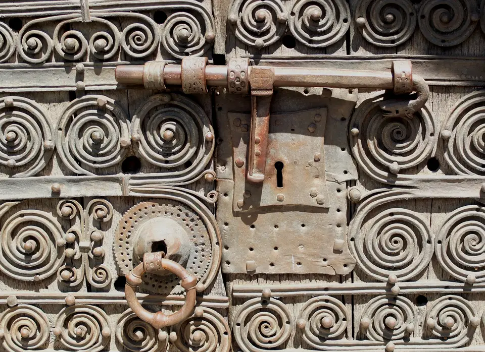
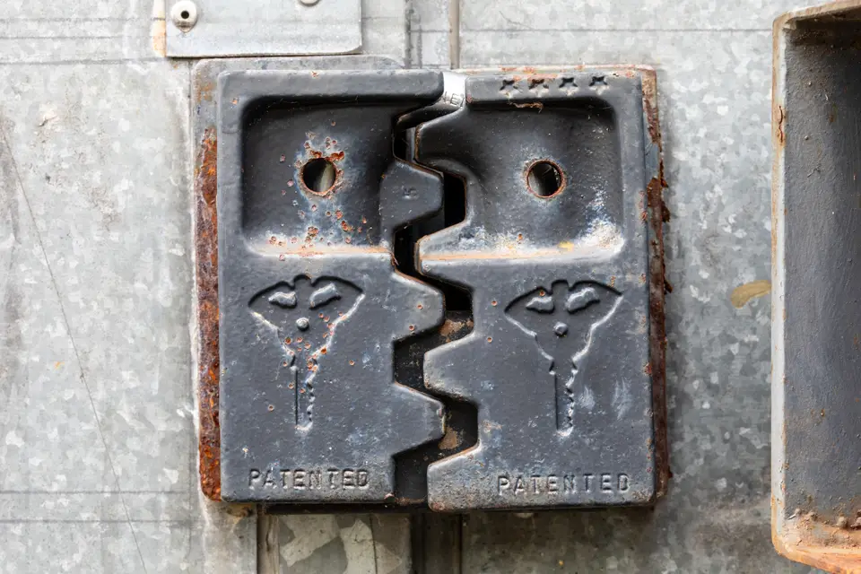
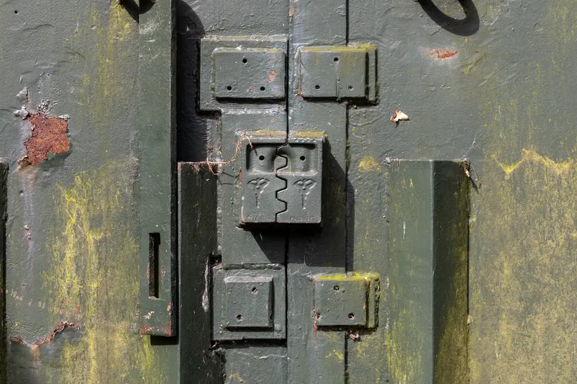

Ouverture de porte fine
Technique d'ouverture non destructive à la radio ou au crochetage pour les portes simplement claquées, sans abîmer le dormant ni la serrure.
Artisan serrurier à Montpellier et ses communes voisines. Dépannage rapide en cas de porte claquée, remplacement de serrure multipoints et sécurisation après effraction avec garantie décennale.
Assureur fictif, contrat n° DEMO-0001 : chaque chantier est couvert dix ans.
Une entreprise déclarée, établie à Montpellier, joignable au 04 00 00 00 00.
Un chiffrage écrit après visite, sans surprise ni ligne cachée.
Nous réalisons l'ensemble des interventions de serrurerie résidentielle et professionnelle dans le respect des règles de l'art et des normes de sécurité.
Technique d'ouverture non destructive à la radio ou au crochetage pour les portes simplement claquées, sans abîmer le dormant ni la serrure.
Installation de barillets européens certifiés protégés contre le crochetage, le perçage et la casse, fournis avec carte de propriété et clés brevetées.
Pose en applique ou à larder de serrures multipoints homologuées par les assurances, offrant une résistance accrue aux tentatives d'arrachement.
Renforcement de porte d'entrée par blindage d'acier, cornières anti-pinces et paumelles renforcées pour retarder toute tentative d'intrusion.
Découvrez nos derniers chantiers de pose de serrures de sécurité, remplacement de cylindres et ajustement de fermetures à Montpellier.





Une méthode d'intervention claire, transparente et sans stress pour résoudre votre problème de serrure au plus vite.
Vous nous expliquez la situation : porte claquée ou verrouillée, modèle de clé et marque pour préparer les outils nécessaires.
Sur place, l'artisan examine la porte, vous détaille la méthode préconisée et présente un devis gratuit avant de commencer.
Mise en œuvre des méthodes les moins destructives pour ouvrir la porte ou installer proprement votre nouveau mécanisme.
Test complet du bon fonctionnement du pêne et de la gâche, puis remise en main propre des nouvelles clés scellées.
Notre atelier mobile dessert quotidiennement Montpellier ainsi que les communes périphériques pour tous travaux de serrurerie.
Serrurerie résidentielle et dépannage dans tous les quartiers montpelliérains.
Intervention rapide pour ouverture de porte et sécurisation d'accès.
Remplacement de serrures, cylindres et verrous de haute résistance.
Sécurisation après tentative d'effraction et pose de serrures multipoints.
Les réponses aux questions que vous vous posez avant de faire appel à un artisan serrurier.
Dans l'immense majorité des cas, une porte simplement claquée (non verrouillée à clé) s'ouvre par méthode fine à la feuille de radio ou au by-pass sans endommager le cylindre ni la poignée.
Délivrée par le CNPP, la marque A2P garantit la résistance du mécanisme aux attaques destructives : une étoile pour 5 minutes, deux étoiles pour 10 minutes et trois étoiles pour 15 minutes face aux outillages de cambriolage.
Conserver un cylindre dont les clés circulent dans la nature expose votre logement à une intrusion sans trace d'effraction, ce qui complique les prises en charge par votre compagnie d'assurance habitation.
Toutes nos factures comportent le détail précis des pièces remplacées, les numéros de série, le taux de TVA en vigueur ainsi que les mentions de notre garantie décennale obligatoire.
Une question sur la sécurisation de votre logement ou un besoin d'intervention rapide ? Contactez-nous directement.